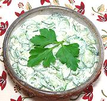

|
Cucumbers, Country-styleUkraine - Selians'ka Salata z Ohirkiv | ||||
| Serves: Effort: Sched: DoAhead: |
6 salad ** 1-3/4 hrs Yes |
This refreshing salad has a more complex sour cream sauce than most Eastern European cucumber salads, and it's less tart than plain vinegared cucumber salads. | |||
|
2 1-1/2 ------ 2 1 1 2/3 1 1-1/2 1/4 ------ |
# t --- t t c T T t --- |
Cucumbers (1) Salt -- Dressing Eggs, ext lrg Parsley, fresh Dill, fresh Sour Cream Honey Mustard (2) Pepper -- Garnish Parsley sprigs |
Make - (1-3/4 hr - 20 min work)
|